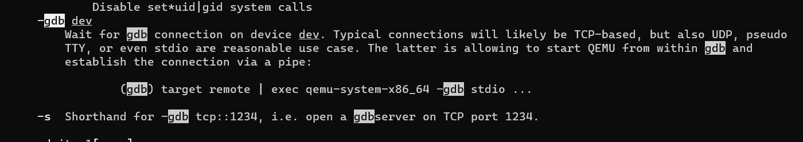

QEMU+GDB
QEMU
我们的实验要用到一个计算机硬件的模拟器，叫做QEMU。听到这个东西，是不是很熟悉？我们在ICS课上写过一个叫NEMU的东西，来模拟计算机的硬件，同时，我们记得NEMU里面还有一个叫做Kernel的东西。在操作系统课程的实验中，QEMU和NEMU类似，都是完全通过软件来模拟硬件的执行。但不同的是，QEMU这个系统十分庞大，功能非常强大。
实验过程中写出的操作系统，是可以在实际的硬件上运行的，但是如果直接在我们的电脑上运行，有以下两点坏处：
- 我们糟糕的代码直接运行在硬件上可能会损坏硬件
- 没办法进行调试
所以，我们采用QEMU模拟器来运行我们的操作系统，并通过GDB来进行Debug，具体操作在下面会解释。
GDB
GDB我知道大家学过了，但是估计只学过一些比较简单的。下面教给大家一点黑科技。
利用QEMU模拟80386平台，运行自制的操作系统镜像os.img
$ qemu-system-i386 os.img
利用QEMU模拟80386平台，Debug自制的操作系统镜像os.img，选项 -s 在TCP的1234端口运行一个 gdbserver（不用懂，反正就是QEMU会把在其上运行的操作系统的执行信息发送给GDB），选项 -S 使得QEMU启动时不运行80386的CPU。
$ qemu-system-i386 -s -S os.img
再另外开一个shell，启动GDB，连接上述gdbserver，在程序计数器0x7c00处添加断点，运行80386的 CPU，显示寄存器信息，单步执行下一条指令。
$gdb #启动gdb
$(gdb)target remote localhost:1234 #gdb远程连接上gdbserber
...
$(gdb)b *0x7c00 #打断点
$(gdb)r #运行
...
$(gdb)info registers #查看寄存器的值
...
$(gdb)si #逐句执行，执行下一步
...
由于跟GDB有关的黑科技太多，为了让文档不太长，下面列出一些文档，你们可以参考：
- (13条消息) GDB入门教程_Dablelv的博客专栏-CSDN博客_gdb菜鸟教程：这里面有一些比较好用的
GDB指令，比如查看源码，反汇编等等，请自行查阅相关指令。 - GDB Documentation (sourceware.org)：这是GDB官方用户手册，有能力的人可以参考。
补充
你可能会比较疑惑，我们是怎么知道qemu-system-i386 -s -S os.img要用这两个参数。其实这个可以通过man命令来搜索，输入man qemu-system-i386就可以进入到qemu的手册里，这里有任何关于qemu的知识。输入后，首先进入到qemu的手册界面：
然后输入斜杠/加上关键词来搜索，比如我想要用gdb调试qemu上的代码，就输入/gdb，敲回车。这时，会显示有gdb的内容。输入n查看下一个，输入N查看上一个！然后你就发现有一个什么-s参数会开启端口为1234的gdb server。它调用了-gdb参数，它让qemu等待gdb的链接。

这时你会发现，还没等你连上gdb，qemu就把代码跑完了。所以我们需要一个暂时不让qemu启动的选项。搜索关键词start，发现-S参数可以做到这点。
好了，齐活！参数找到了，开启qemu，再打开gdb远程连接即可！